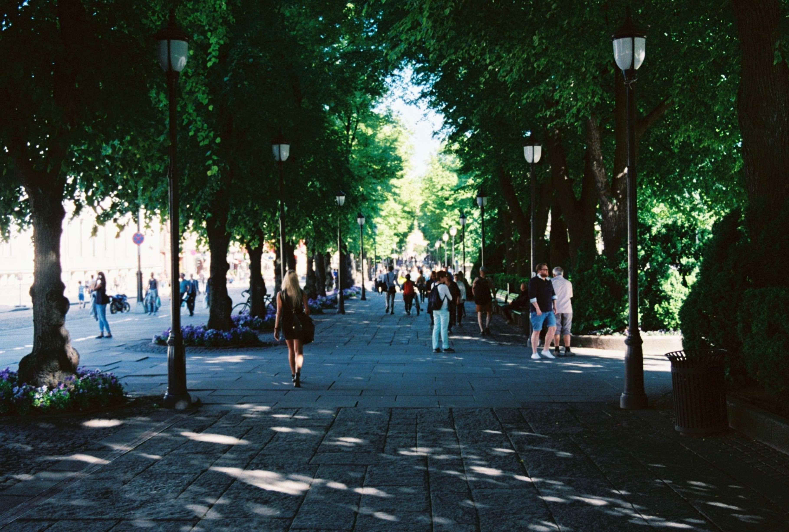

<div class="blog_panel">
    {% for post in site.categories.style %}
      <div class="post_panel">
        <div class="post_img_div">
          <a href="#"></a>
        </div>
        <div class="post_info">

          <h1 class="post_title">{{ post.title }}</h1>
          <span class="post_date"><i>{{ post.date | date: '%B %d, %Y' }}</i></span>
          <p class="post_content">{{ post.content }}</p>
        </div>
      </div>

    {% endfor %}
    <!-- {% if paginator.total_pages > 1 %}
      <div class="pagination">
        <div class="page_button">
          {% if paginator.previous_page %}
            <a href="{{ paginator.previous_page_path | prepend: site.baseurl | replace: '//', '/' }}">&laquo; Prev</a>
          {% else %}
            <span>&laquo; Prev</span>
          {% endif %}
        </div> -->

    <!-- {% for page in (1..paginator.total_pages) %}
      {% if page == paginator.page %}
        <p id="page_p">{{ page }}</p>
      {% elsif page == 1 %}
        <a href="{{ paginator.previous_page_path | prepend: site.baseurl | replace: '//', '/' }}">{{ page }}</a>
      {% else %}
        <a href="{{ site.paginate_path | prepend: site.baseurl | replace: '//', '/' | replace: ':num', page }}">{{ page }}</a>
      {% endif %}
    {% endfor %} -->
        <!-- <div class="page_button">
          {% if paginator.next_page %}
            <a href="{{ paginator.next_page_path | prepend: site.baseurl | replace: '//', '/' }}">Next &raquo;</a>
          {% else %}
            <span>Next &raquo;</span>
          {% endif %}
        </div>
    </div>
  {% endif %} -->

</div>
<!-- <div id="next_prev">
  {% include next_prev.html %}
</div> -->
